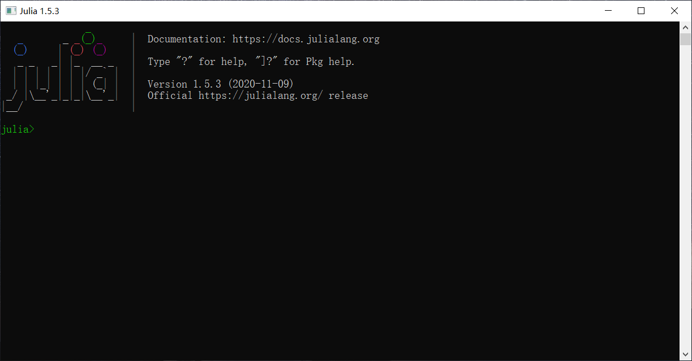

MPS
This is the documentation for the codes used to numerically simulate the Rydberg array systems (i.e., 2D systems with arbitrary geometry and long-range coupling). Nothing is new, but some codes are pedagogical. The codes are based on the ITensors package in Julia.
About Julia
Julia is a flexible dynamic language, with performance comparable to traditional statically-typed languages, eliminating the trade-off between performance and productivity. It features the just-in-time (JIT) compilation, which enables one to program as easily as Python or MATLAB, and runs as fast as C++. There're already quite many packages designed for scientific computation, and one can use libraries from other languages.
Installing Julia
The installation is quite simple. Just download a version according to your operating system from here, and the installer will do everything for you.
After you successfully install Julia, you can open a terminal window to start programming, like this.

Its name is REPL (read-eval-print loop). In here you can run scripts just like in IPython or in MATLAB command line.Programming with VSCode
There's a nice VSCode extension for Julia support. Julia in VSCode provides the dynamic autocompletion, inline results, plot pane, integrated REPL, etc. To install this extension, simply search for Julia in the Extensions panel in VSCode.
Basics of Julia
The documentation of Julia is super long. To get started, let's introduce some basic operations in Julia.
Get help
First, most of the built-in functions or objects (including operators like +, -, *, ^, etc.) in Julia or Julia packages have a documentation. To access these documentations, type ? in the REPL, and the interface will change from Julia> to help?>. Then type the name of the function/object/operator and it will return the description. For example, we get the following by typing ? +
help?> +
search: +
+(x, y...)
Addition operator. x+y+z+... calls this function with all arguments, i.e. +(x, y, z, ...).
Examples
≡≡≡≡≡≡≡≡≡≡
julia> 1 + 20 + 4
25
julia> +(1, 20, 4)
25
With this tool, one can already explore a lot in Julia.
Data types
The data types in Julia are similar to other languages. Write a line like x = 1 to define a variable. Type typeof(x) to check the datatype of a variable. x = 1 defines a Int64 variable, while x = 1.0 defines a Float64 variable. Similarly x = 1.0 + 0.0im defines a Complex{Float64} variable. im is the imaginary unit in Julia. Use Int(x) to convert x to Int. Note that converting x = 1.2 to Int(x) will touch off an InexactError since Int cannot correctly store a float number. One can also make explicit declarations of data type when defining the arguments of a function, by using <Arg>::<Datatype>. For example, foo(x::Int64) means this function only accepts variables of data type Int64. Note that explicit declaration of data type of global variables is not supported. One can use sub-type in the declaration. For example, Real contains both Int64 and Float64. Sometimes you might see Float64<:Real, meaning Float64 is a sub-type of Real. One can also use Union to have an argument accept multiple data types. For example, the function foo(x::Union{Int64, Float64}) accepts both Int64 and Float64. There's a special data type Symbol. Variables like :name with a colon as start is of this type. It is useful when one wants to specify, for example, the name of keyword arguments in functions.
Variables
An interesting fact of Julia is that it accepts Unicode characters as variable names. For example, one can write δ = 2. More interesting is with Julia in VSCode one can type $\LaTeX$ when programming. For example, one can type δ by typing \delta and then press Tab.
Note that the scope of variable (or its living period) is similar to that in C/C++. So if one wants to define a variable with initial value controlled by some condition, one must ensure that the definition is in proper position. For example, the codes below cannot run.
for i = 1:N
if i == 1
var = init_value
else
var = 2 * var
end
end
This is because var is defined in i = 1 loop and is destructed when the loop goes to i = 2. Then var has no definition when the program calculates 2 * var. Instead, one should write
var = some_value # with corresponding data type
for i = 1:N
if i == 1
var = init_value
else
var = 2 * var
end
end
One can find an example in example/ex_MPS.jl. See the bond variable in function MPSfromTensor.
Defining an array is the same as in Python. arr = [1, 2, 3] defines a 1-by-3 array Array{Int64, 1}. One can define an uninitialized multi-dimensional array by Array{T, N}(undef, dims...). Here ... means it accepts multiple arguments, N is the order of the tensor, and T is the data type. For example, mat = Array{Float64, 2}(undef, 2, 3) creates a 2-by-3 matrix. The argument N can be omitted, mat = Array{Float64}(undef, 2, 3). Access the element of an array by using arr[pos1, pos2, ...]. Note the first element of an array is arr[1] instead of arr[0]. The one-dimensional and two-dimensional arrays have special aliases. Vector{T} is the same as Array{T, 1} and Matrix{T} is the same as Array{T, 2}.
One can define a struct by
struct StructName
var1::<datatype1>
var2::<datatype2>
...
end
It automatically generates a constructor StructName(var1::<datatype1>, var2::<datatype2>).
Tuple is also an important variable type. It is defined by, e.g., (2, 3). Julia supports the operator +=. var1 += var2 is equivalent to var1 = var1 + var2. How are codes like below processed?
var1 += var2, var3, var4
This is equivalent to
var1 = var1 + (var2, var3, var4)
This is how the AutoMPO works.
Functions
The definition of functions is very much like that in MATLAB. But it supports default value and keyword arguments.
"""
This is a documentation for the function.
One can use Markdown here.
"""
function foo(arg1, arg2, ...,
arg_default1=default_value1,
arg_default2=default_value2,
...;
kwargs...)
Note that the input of normal arguments must obey the sequence in definition. Declaration of data type is recommended but not necessary. They are separated from keyword arguments by a semicolon instead of a comma. As an example, let's calculate define a function to calculate $x^s \pm y^s$ with default value for $s$ being $2$ and $\pm$ specified by a keyword argument.
"""
powerSum(x::Float64, y::Float64,
s::Float64=2;
kwargs...)
Calculate ``x^s \\pm y^s``.
The default value of ``s`` is 2.
Specify plus or minus by keyword argument `sign`.
"""
function powerSum(x::Float64, y::Float64,
s::Float64=2;
kwargs...)
# Get the keyword arguments
# Default is :plus
sign = get(kwargs, :sign, :plus)
if sign == :plus
return x^s + y^s
elseif sign == :minus
return x^s - y^s
else
Error("Only supports :plus and :minus as sign!")
end
end
By type ?powerSum, one can get the documentation before the definition of this function.
Misc.
Use ## to define a block. Use Shift+Enter to only run a block. Just like in Jupyter Lab.
Type ] for package management.
About ITensors
ITensors is a nice package written in both Julia and C/C++. It allows one to program at the physics level and not to worry about the underlying mechanism of array storage and access, etc.
Installing ITensors
Installing ITensors is no different from installing any packages in Julia. Just type ] to manage packages. You will see pkg> instead of julia>. Then type add ITensors to install the package.
Using ITensors
A pedagogical introduction of this package can be found in the paper arXiv:2007.14822. After reading Secs. 2-5 and Sec.7 you will know the basic usage of this package.
The examples folder contains some pedagogical codes with full comment. This gives you some useful idea that is not covered in the introduction mentioned above. They also explain some of the underlying implementation of the ITensors built-in functions. The recommended reading sequence is:
ex_MPS.jlex_MPO.jlex_TEBD.jlex_imagtTimeTEBD.jlThen read these for an introduction of DMRG.ex_DMRG_builtin.jlfor how to use the built-in DMRG solver.ex_dmrg_simple.jlfor a simpler but more pedagogical implementation of DMRG.ex_dmrg_annotation.jlfor an explanation of the underlying implementation of the built-in DMRG. Then read these for support of 2D and long-range coupled systems.ex_2dHamiltonian.jlex_Rydberg1D.jl
Two-dimensional systems with long-range interaction
The support for two-dimensional systems or long-range coupled systems is limited in ITensors Julia. I made another implementation with better support. They are defined in latticemodels.jl.
A lattice is described by a LatticeModel2D instance. It contains
LatticeModel2D.xs: a vector containing the $x$-coordinates of the lattice sites.LatticeModel2D.ys: a vector containing the $y$-coordinates of the lattice sites.LatticeModel2D.cplterms: a vector ofCplTerminstances.LatticeModel2D.links: a vector ofLinkinstances.
The numbering of sites define a winding path to reduce the two-dimensional system to a one-dimensional
A CplTerm instance describes an interaction term in the Hamiltonian. It contains
CplTerm.s: a vector of integers marking the sites involved in this interaction term.CplTerm.type: a optional string describing the term. For example, in toric code model, one can use “plaquette” and “star” to describe the term. In Kitaev Honeycomb model, one can use “x/y/z” to describe the model.
The Link struct is simply used for plotting reasons. It contains the coordinates of the two ends of a line when plotting the lattice.
To plot a lattice, simply plot(latt::LatticeModel2D) will do. To plot local observables on it, just plot(latt::LatticeModel2D, obs::Vector{Float64}). This requires the package Plots.
The function square_lr creates a square lattice. It returns a LatticeModel2D corresponding to the two-dimensional square lattice of dimensions (Nx,Ny). By default the lattice has open boundaries, but can be made periodic in the $y$ direction by specifying the keyword argument yperiodic=true.
Long-range couplings are included, with maximum coupling range specified by the keyword argument max_nnorder.
Time dependent variational principle (TDVP)
tdvp.jl provides an implementation of TDVP. In contrast to TEBD, it can calculate the time evolution of systems with long-range interactions. simpletdvp.jl provides a simpler implementation for pedagogical reasons.
A full example
Import packages
using ITensors
using ColorSchemes
include("../latticemodels.jl")
Define a 2D lattice
Ny = 6
Nx = 4
N = Nx*Ny
sites = siteinds("S=1/2", N)
# Obtain a LatticeModel2D struct
# which defines a lattice
latt = square_lr(Nx, Ny)
Define a Hamiltonian
# Define the Ising spin Hamiltonian on this lattice
ampo = AutoMPO()
for b in latt.locterms
ampo .+= "Sz", b.s[1], "Sz", b.s[2]
end
H = MPO(ampo, sites)
Run DMRG algorithm to obtain the ground state
# Initialize wavefunction to a random MPS
# of bond-dimension 2
psi0 = randomMPS(sites, 2)
sweeps = Sweeps(10)
maxdim!(sweeps,20,60,100,100,200,400,800)
cutoff!(sweeps,1E-8)
@show sweeps
energy,psi = dmrg(H,psi0,sweeps)
Measure local quantities and plot
function meas_Sz(psi, n)
psi = orthogonalize(psi,n)
sn = siteind(psi, n)
Sz = scalar(dag(prime(psi[n],"Site"))*op("Sz",sn)*psi[n])
return real(Sz)
end
Sz_list = [meas_Sz(psi, n) for n = 1:N]
plot(latt, Sz_list)